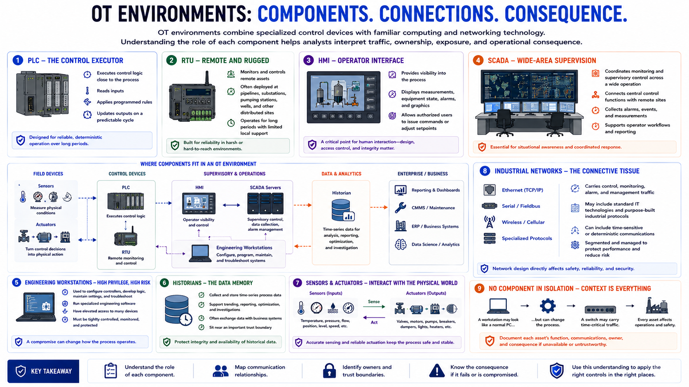

Common OT Components
Connecting to LMS... Progress: in progress

Narration
OT environments combine specialized control devices with familiar computing and networking technology. Understanding the role of each component helps analysts interpret traffic, ownership, exposure, and operational consequence.
A programmable logic controller, or PLC, executes control logic close to the process. It reads inputs, applies programmed rules, and updates outputs on a predictable cycle. A remote terminal unit, or RTU, performs similar monitoring and control functions, often at geographically distributed locations such as pipelines, substations, or pumping stations. These devices may operate for long periods with limited local support.
A human-machine interface, or HMI, gives operators visibility and control. It displays measurements, equipment state, alarms, and process graphics, and may allow authorized users to issue commands or adjust setpoints. A supervisory control and data acquisition system, commonly called SCADA, coordinates monitoring and supervisory control across a wider operation, often connecting central control functions with remote sites.
Engineering workstations are used to configure controllers, develop logic, maintain device settings, and troubleshoot systems. Their privileges and software make them highly sensitive assets. Historians collect time-series process data for analysis, reporting, optimization, and investigation. Because historians frequently exchange data with business systems, they can sit near an important trust boundary.
Sensors measure conditions such as temperature, pressure, flow, position, or speed. Actuators turn control decisions into physical action by moving valves, starting motors, operating breakers, or changing equipment position. Industrial networks carry data among these components using Ethernet, serial links, wireless systems, and specialized protocols.
No component should be evaluated in isolation. A workstation may appear to be an ordinary Windows computer, but its engineering tools can alter a process. A network switch may carry time-sensitive control traffic. Good security begins by documenting each asset's function, communication relationships, owner, and consequence if it becomes unavailable or untrustworthy.